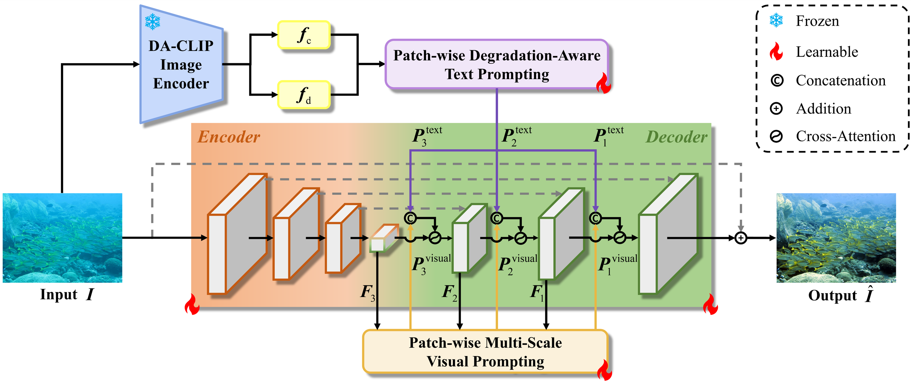
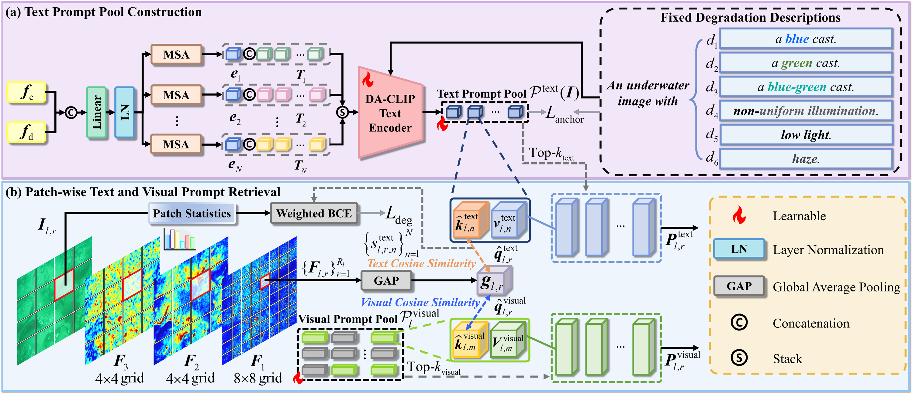

Underwater image enhancement (UIE) aims to restore images affected by complex underwater degradations. Multiple degradations may occur in a single image, and correcting one may interfere with the restoration of another. All-in-one UIE (AiO-UIE) seeks to accommodate diverse and mixed degradations within a unified, adaptive model. However, existing prompt-based AiO-UIE methods typically rely on image-level visual or text prompts alone and lack region-specific and complementary guidance, limiting their ability to handle spatially varying mixed degradations. To address these limitations, we propose PDPL-UIE, a patch-wise dual-prompt learning framework for AiO-UIE. PDPL-UIE incorporates two prompt-learning modules: Patch-wise Degradation-Aware Text Prompting (PDATP) and Patch-wise Multi-Scale Visual Prompting (PMSVP). PDATP uses Degradation-Aware Contrastive Language-Image Pre-training (DA-CLIP) to construct image-conditioned text prompts from predefined degradation descriptions, providing semantics that distinguish multiple degradations and mitigate degradation interference. PMSVP provides multi-scale visual prompts to guide the recovery of local structures and details. For each local feature patch, PDPL-UIE dynamically retrieves and fuses relevant text and visual prompts to jointly guide restoration under spatially varying mixed degradations. Extensive experiments on full-reference and no-reference datasets demonstrate that PDPL-UIE outperforms several leading methods in both quantitative and qualitative comparisons.

Overall framework of PDPL-UIE. PDATP constructs degradation-aware text prompts from the content feature $\boldsymbol{f}_{\mathrm{c}}$ and degradation feature $\boldsymbol{f}_{\mathrm{d}}$ extracted by a frozen DA-CLIP image encoder, together with fixed underwater degradation descriptions. At decoder level $l\in\{3,2,1\}$, $\boldsymbol{F}_l$ denotes the decoder feature, while $\boldsymbol{P}_l^{\mathrm{text}}$ and $\boldsymbol{P}_l^{\mathrm{visual}}$ denote the text and visual prompts retrieved for its local patches from PDATP and the corresponding PMSVP pool, respectively. The retrieved prompts are concatenated and fused with the local patches of $\boldsymbol{F}_l$ through cross-attention to guide restoration.

Detailed prompt construction and retrieval in PDPL-UIE. (a) PDATP constructs a text prompt pool from DA-CLIP content and degradation features together with fixed degradation descriptions, which are abbreviated for display. The semantic anchoring loss preserves the correspondence between the learned prompts and the fixed descriptions. (b) Aligned grids partition the degraded image and decoder features into corresponding local patches. Each local feature patch retrieves the three most similar text prompts, while patch statistics provide weak supervision for all six similarity scores. PMSVP then retrieves visual prompts for the same local feature patch from the corresponding visual prompt pool.
@article{jia2026pdpluie,
title={{PDPL-UIE}: Patch-wise Dual-Prompt Learning for All-in-One Underwater Image Enhancement},
author={Donghui Jia and Yijian Wang and Jiaquan Yan and Peixian Zhuang},
year={2026}
}